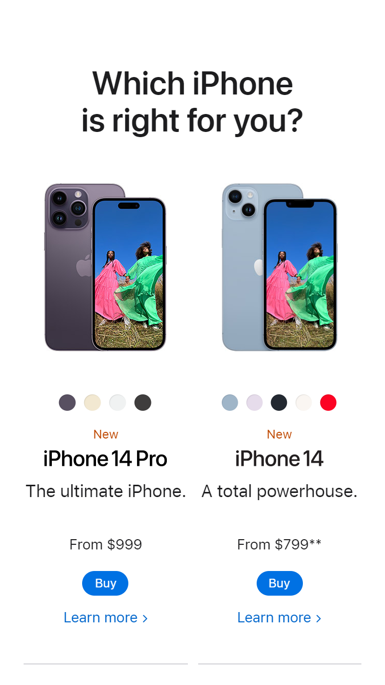

Proximity
PlayStation, Sony
playstation.comIn this example, Sony makes good use of proximity by bringing the image and heading close enough together to let the user know that they are related. In the same way, Sony separates the two elements from those below to let the user know that they are different topics.
Contrast
Xbox, Microsoft
xbox.comXbox, Microsoft shows an example of contrast. The white text on the grayish black background makes it very easy for the user to read. In addition, both colors provide a good design and style to the web page. Personally, I like the combination of these colors.
Alignment
Apple
apple.com Appel properly uses alignment to create a good design for the user. We can see how it applies vertical alignment. In the image of the iPhones, the center, top and bottom of both elements are aligned horizontally. The same is the case with the elements below.